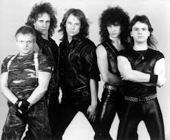

Biografía
Accept es una banda alemana de heavy metal formada en 1976 en Solingen, Alemania. Son considerados pioneros del speed metal y precursores del power metal. Su sonido se caracteriza por riffs potentes, solos de guitarra agresivos y voces contundentes. El grupo alcanzó notoriedad internacional con su álbum Restless and Wild (1982), que incluye clásicos como “Fast as a Shark”, y se consolidó con Balls to the Wall (1983), uno de sus discos más emblemáticos. Tras varios cambios de formación y periodos de inactividad, Accept regresó con fuerza en 2010 con el vocalista Mark Tornillo, manteniendo su estilo clásico pero adaptándose a los nuevos tiempos.
Información detallada
- Origen: Solingen, Alemania
- Año de formación: 1976
- Género: Heavy Metal / Speed Metal / Power Metal
- Fundadores: Udo Dirkschneider (vocalista original), Wolf Hoffmann, Peter Baltes, Gerhard Wahl, Frank Friedrich
- Vocalistas destacados: Udo Dirkschneider, Mark Tornillo
- Integrantes actuales: Wolf Hoffmann, Mark Tornillo, Uwe Lulis, Christopher Williams, Martin Motnik
- Álbumes icónicos: Restless and Wild (1982), Balls to the Wall (1983), Metal Heart (1985), Blind Rage (2014)
- Logros: Banda influyente en el metal europeo, conocida por su técnica en guitarra y energía en vivo
- Estilo musical: Guitarras rápidas y pesadas, riffs memorables, solos virtuosos y letras directas sobre lucha y poder
